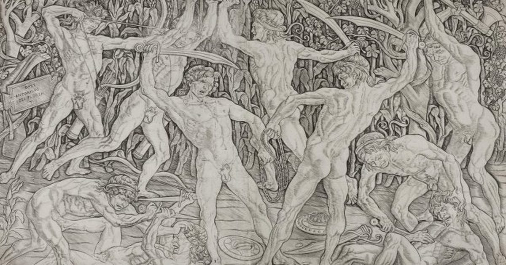

Эволюция мужчин: конкуренция за партнерш или выбор женщин? Научные споры о природе агрессии
Антрополог Дэвид Путс предложил теорию, согласно которой конкуренция между мужчинами за доступ к партнершам играла ключевую роль в формировании мужской физиологии и психологии. Этот взгляд вызывает острые споры в научном сообществе и заставляет переосмыслить привычные представления об эволюции человека.
Случайное наблюдение в фуд-корте и рождение гипотезы
В начале двухтысячных годов аспирант Дэвид Путс услышал в торговом центре, как два молодых человека разговаривают необычно низкими голосами — рядом с ними стояла девушка. Первая мысль исследователя была стандартной для эволюционной психологии: низкий голос эволюционировал для привлечения женщин. Однако вскоре Путс обратил внимание, что тембр голоса работает и как сигнал доминирования: достаточно вспомнить голос Дарта Вейдера, чтобы понять, как низкий баритон может запугивать соперников.
Для проверки двух гипотез Путс провел эксперимент: женщины действительно предпочитали более низкие голоса, но сила этого эффекта была невелика. В то же время мужчины оценивали доминируемость и боевые способности других мужчин по голосу в 15 раз сильнее. Этот результат заставил ученого пересмотреть литературу и обнаружить систематическое смещение: исследования, подтверждающие роль женского выбора, публиковались охотнее, а данные о мужской конкуренции часто оставались в тени.

Анатомические доказательства и статистика насилия
Путс и его коллега Саид Кугард в обзоре 2026 года приводят ряд морфологических и поведенческих аргументов. Мужчины в среднем крупнее женщин, обладают на 61 процент больше мышечной массы и на 75 процент больше массы верхнего пояса — черты, полезные в физических столкновениях. К «знакам статуса» биологи относят бороду и низкий голос: они сигнализируют о доминировании и позволяют выигрывать ресурсы, включая партнерш, без прямой драки.
Археологические данные подтверждают асимметрию травматизма: среди неандертальцев и ранних современных людей мужчины получали черепно-мозговые травмы в шесть раз чаще женщин. Криминалистическая статистика за два десятилетия в четырех регионах показывает, что незнакомые мужчины убивают друг друга в 27 раз чаще, чем незнакомые женщины. По мнению авторов, репродуктивный успех предков часто зависел не от прямой агрессии, а от правдоподобной угрозы её применения.

Полигамия, генетика и альтернативные объяснения
Генетический анализ Y-хромосомы и митохондриальной ДНК указывает на то, что в течение последних 150 тысяч лет эффективное число размножающихся женщин было примерно в три раза выше, чем мужчин. Путс и Кугард интерпретируют это как следствие полигинической системы размножения: часть мужчин оставляла потомство с несколькими партнершами, а многие оставались бездетными. По их модели, предки жили в односамецких семейных единицах внутри более крупных групп, подобно гамадриасам и геладам, где самцы острее борются за доступ к самкам.
Критики, в частности антрополог Агустин Фуэнтес, оспаривают сам премус полигинии. Большинство генетиков склоняются к моногамии с легкой полигинией в качестве анцестрального варианта. Фуэнтес обвиняет авторов в выборочном цитировании: в обзоре нет ссылок на работы, рассматривающие насилие как сложный феномен, зависящий от множества условий, а не как эволюционную стратегию мужчин. Эмерит профессор Реймонд Хеймс называет обзор исчерпывающим, но возражает против заголовка «Самый смертоносный примат» — по данным 2016 года, несколько видов обезьян и лемуров убивают сородичей чаще людей.
Природа рук, коалиционное насилие и натуралистическая ловушка
Хеймс подчеркивает важное различие: коалиционное насилие (война) и индивидуальная агрессия мужчин имеют разные эволюционные корни. Первое — это политическая конкуренция за редкие ресурсы, второе — борьба за репродуктивный доступ. Путс соглашается, что люди плохо приспособлены к кулачным боям — наши руки не созданы для ударов, а тело уязвимо. Главное оружие предков — ум, способный создавать угрозы и союзы, а не биомеханика кулака.
Сам Путс предостерегает от натуралистического заблуждения: объяснение эволюционных корней агрессии не означает её оправдания. Понимание биологических предрасположенностей может помочь в разработке социальных механизмов, снижающих насилие, но не делает его неизбежным или нормативным. Спор продолжается, и научное сообщество пока не пришло к консенсусу по вопросу, насколько мужская конкуренция сформировала современного человека.
Коротко: Теория Путса ставит под сомнение доминирующую идею о женском выборе как главном драйвере эволюции мужчин, указывая на роль мужской конкуренции. Научные споры вокруг этой гипотезы показывают, как сложно разделить биологические и культурные факторы поведения.
Как вы считаете, можно ли объяснить современное мужское поведение только эволюционными механизмами, или социальные факторы играют решающую роль?